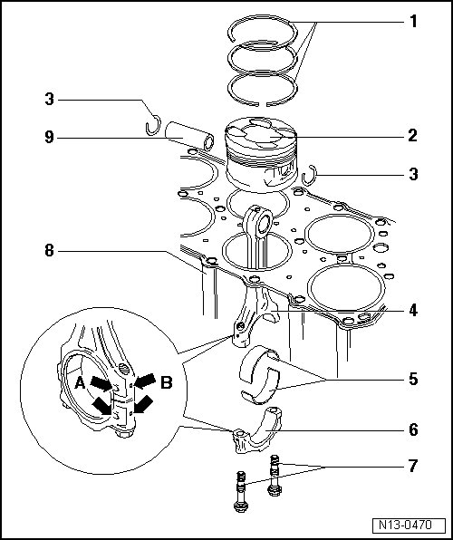

Connecting Rod: Service and Repair
Piston and Connecting Rod, Assembly Overview

1 Piston rings
• Offset gaps by 120 degrees
• Use piston ring pliers for removal and installation
• "TOP" faces toward piston crown
• Checking ring gap --> [ Piston Ring Gap, Checking ] Piston Ring Gap, Checking.
• Check piston ring groove clearance --> [ Piston Ring Gap, Checking ] Piston Ring Gap, Checking.
2 Piston
• Checking --> [ Piston Ring Gap, Checking ] Piston Ring Gap, Checking.
• Mark installed location to connecting rod and affiliation to cylinder
• Flatter side of piston crown faces toward center of cylinder block
• Install using funnel (T10147)
3 Circlip
4 Connecting rod
• Only replace as set
• Affiliation to the cylinder mark - B -
• Installation position: Markings - A - must align
5 Bearing shell
• Note installation position
• Do not interchange used bearing shells
• Bearing shell retaining tabs must be firmly seated in the notches
• Axial play new: 0.05 to 00.31 mm, Wear limit: 0.40 mm
• Measure radial clearance with Plastigage: New: 0.02 to 00.07 mm, Wear limit: 0.10 mm. Do not turn crankshaft when checking radial clearance
6 Connecting rod bearing cap
• Affiliation to the cylinder mark - B -
• Installation position: Markings - A - must align
7 30 Nm + 1/4 turn (90°)
• Replace
• Lubricate threads and contact surface
• Tighten to 30 Nm to measure radial play, do not turn further
8 Cylinder block
• Cylinder bore, checking --> [ Piston Ring Gap, Checking ] Piston Ring Gap, Checking.
• Removing and installing crankshaft --> [ Crankshaft, Assembly Overview ] Crankshaft, Assembly Overview.
• Piston and cylinder dimensions --> [ Piston Ring Gap, Checking ] Piston Ring Gap, Checking.
9 Piston pin
• If difficult to move, heat piston to 60° C
• Removing and installing using a drift (VW 222 A)